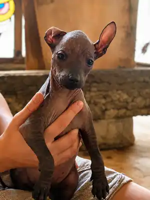

Hoy, 27 de agosto de 2026, en Xolos Ramírez registramos una nueva jornada de vacunación para cuatro de nuestros cachorros xoloitzcuintles: Xilonen Ramírez, Oce Ramírez, Metztli Ramírez y Citlali Ramírez.
Los cuatro tienen aproximadamente un mes y medio de edad y recibieron su vacuna Puppy DP. Esta fecha queda incorporada a su historial de crecimiento como parte del seguimiento individual que llevamos de cada ejemplar desde sus primeras semanas de vida.

Cuatro cachorros en la jornada de hoy
Variedad sin pelo
- Xilonen Ramírez — hembra, talla miniatura.
- Oce Ramírez — cachorro xoloitzcuintle.
Variedad con pelo
- Metztli Ramírez — hembra de pelaje negro.
- Citlali Ramírez — hembra de pelaje negro.
Metztli y Citlali reciben además sus nombres en esta etapa de la camada. Nombrar, fotografiar y documentar a cada cachorro nos permite conservar una cronología clara de su desarrollo y distinguir sus historias individuales aun cuando crecen juntos.
¿Por qué documentamos las vacunas?
Para nosotros, una jornada como ésta no es solamente una fecha en el calendario. Forma parte de un expediente vivo de cada xoloitzcuintle: edad aproximada, fotografías, identidad, hitos de crecimiento y seguimiento sanitario.
La documentación permite que, con el paso de los meses, podamos reconstruir la historia de cada ejemplar y compartir con sus futuras familias información ordenada sobre sus primeras etapas de vida. La vacunación de hoy se suma a ese archivo.
Seguimiento después de la vacunación
Durante las horas posteriores a una vacuna observamos el estado general de los cachorros y mantenemos registrado cualquier cambio relevante. Las siguientes etapas de su esquema se determinan de acuerdo con la edad, el producto utilizado y la valoración veterinaria correspondiente.
Xilonen, Oce, Metztli y Citlali continúan creciendo
A esta edad los cambios son rápidos: cada semana modifica su tamaño, coordinación, expresión y personalidad. Xilonen continúa mostrando sus rasgos de miniatura; Oce sigue desarrollándose junto con la camada; y Metztli y Citlali representan la variedad con pelo del xoloitzcuintle, una expresión igualmente auténtica de la raza.
Seguiremos documentando su evolución en Xolos Ramírez mediante fotografías, perfiles y nuevas entradas de este blog. Cada registro ayuda a conservar la memoria de una etapa que dura muy poco, pero que forma una parte esencial de la historia de cada cachorro.
Cuatro cachorros, cuatro identidades y un nuevo paso en su camino de crecimiento.